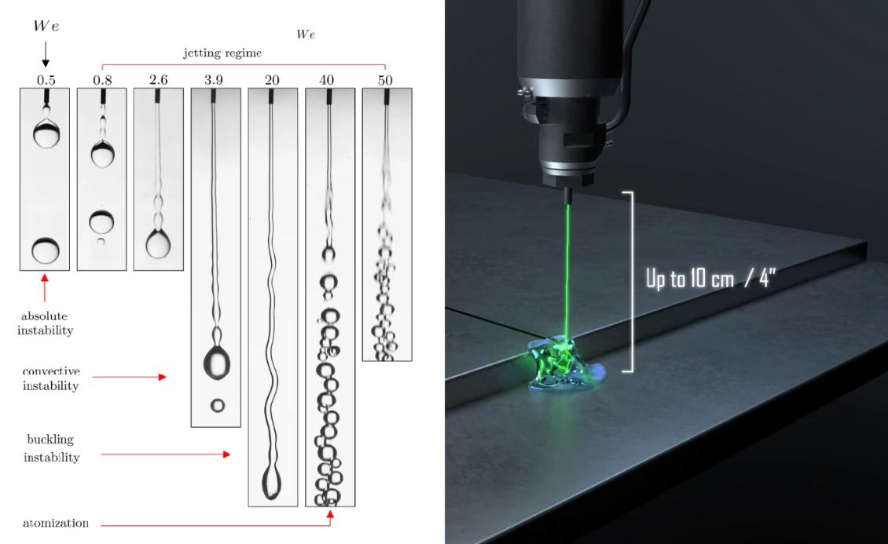

Synova SA — Water-Jet Stability
Applying fluid mechanics fundamentals to extend the usable working length of the Laser MicroJet®
and validate findings experimentally across industrial-grade cutting scenarios.

Illustration of a typical Rayleigh–Plateau jet instability (left) and the Laser MicroJet® (LMJ) technology (right), where a laser is guided inside a ~50 µm water column. Credits: ResearchGate (left), Synova SA (right).
Context: Synova SA & the Laser MicroJet® Technology
Synova SA is a Swiss company specializing in the design and manufacture of 3- and 5-axis CNC machines built around their patented Laser MicroJet® (LMJ) technology. A water microjet (~50 µm diameter) acts as an optical waveguide for the laser, delivering it to the workpiece with no defocusing over depth. The result is deep, parallel-sided cuts that conventional laser systems simply cannot achieve, combined with in-process water cooling that limits thermal damage to the part.
This makes LMJ particularly well-suited for high-value or thermally sensitive applications — semiconductor dicing, aerospace-grade alloys, medical implants, and diamond processing — where surface integrity and dimensional accuracy are non-negotiable. The full range of application areas spans from microelectronics to luxury goods manufacturing.